در پست قبلی رفتیم سراغ دیجیکالا تا ببینیم توی توییتر چیکار میکنه :
حالا در این پست قراره برم سراغ کاله! اومدم توییت هایی که شامل کلمه «کاله» هستند رو به کمک Selenium و پایتون استخراج کردم و حالا میخوام یکسری تحلیل رو روی داده ها انجام بدم. توییت ها رو از تاریخ ۲۲ می ۲۰۰۷ تا ۲۷ می ۲۰۲۲ جمع آوری کردم :
مجموع تعداد توییت های جمعآوری شده 43,528 عدد است. اول ببینیم نخستین توییت در چه سالی نوشته شده و در سال های مختلف چه تعداد توییت در مورد کالا نوشته شده؟اولین توییت در تاریخ سه شنبه، ۱ خرداد ۱۳۸۶ نوشته شده :
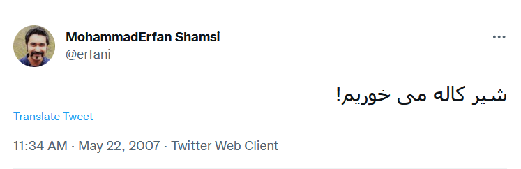
نکته جالبش اینجاست که اولین توییت در مورد دیجیکالا رو هم ایشون نوشته بودند!نمودار زیر نشون میده از سال ۲۰۰۷ تا الان هر سال چه تعداد توییت در مورد کاله نوشته شده :
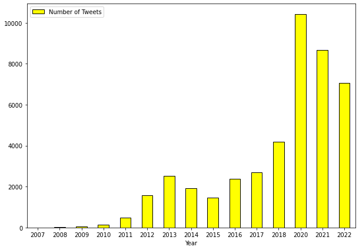
همونطور که از نمودار بالا مشخصه، در سال ۲۰۲۰ بیشترین تعداد توییت در مورد کاله نوشته شده که نکته جالبش هم اینه که در سال ۲۰۲۰ دقیقا در مورد دیجیکالا هم بیشترین تعداد توییت نوشته شده بود!نمودار زیر نشون میده در چه ماه هایی از سال بیشترین توییت نوشته شده :
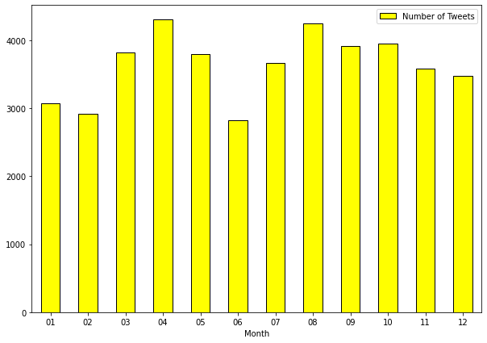
نمودار بالا نشون میده تعداد توییت هایی که در ماه های مختلف در مورد کاله نوشته شده تقریبا با هم برابره! البته به این نکته توجه کنید که ماه های بالا میلادی هستند یعنی ماه ۱ میشه حدودا دی و بهمن و ماه ۱۲ میشه حدودا آذر و دی!هیت مپ زیر نشان میدهد در چه روزی از هفته و در چه ساعتی از شبانهروز (مطابق ساعت تهران) بیشترین توییت نوشته شده است :
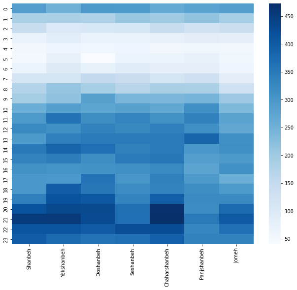
اگر ابر کلمات توییت هایی که در مورد کاله نوشته شده رو رسم کنیم نتیجه به صورت زیر میشه :
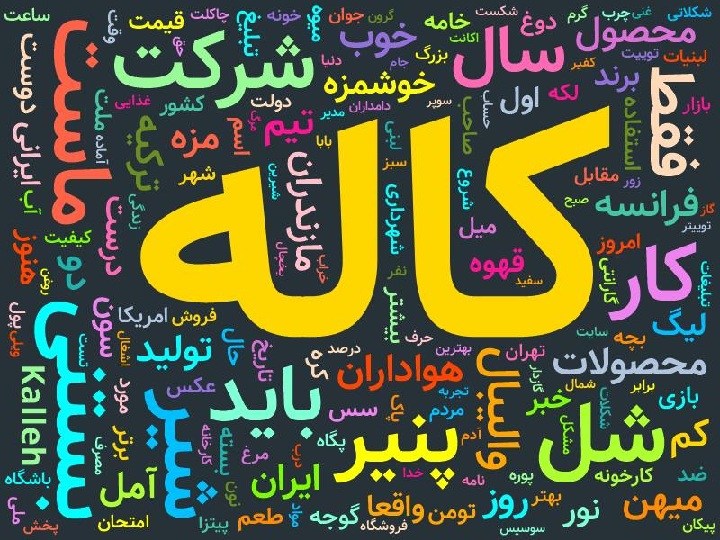
نکتهای که در این زمینه وجود داره اینه که عبارت هایی نظیر «میان کاله»، «ویدئو کاله» و … رو حذف کردم.حالا میخوام بررسی کنم که کدوم توییت ها بیشترین تعداد لایک + ریتوییت + کامنت (ریپلای) رو گرفتند.
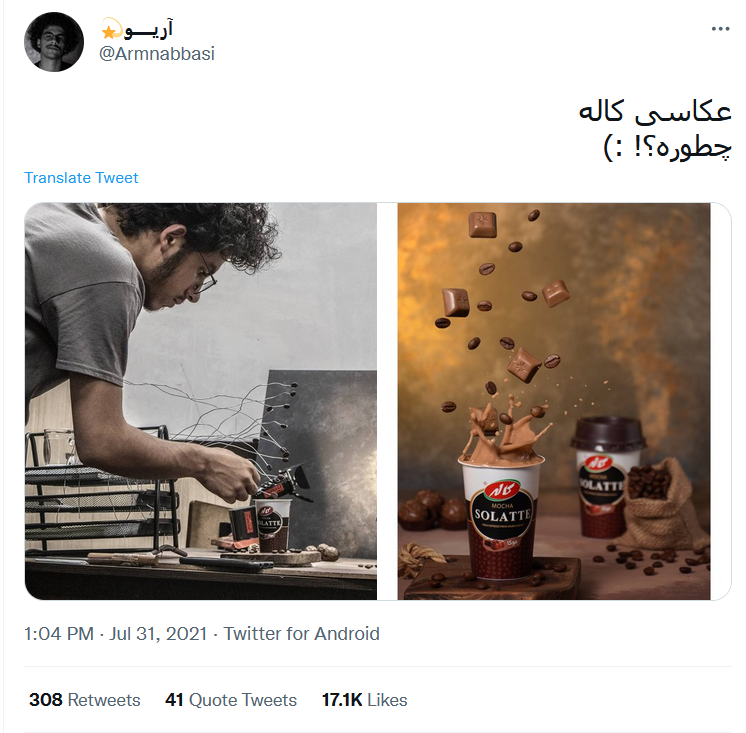
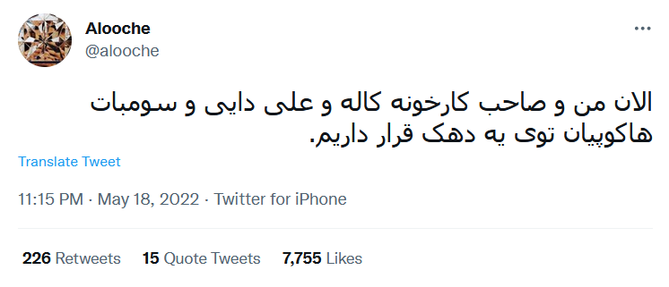
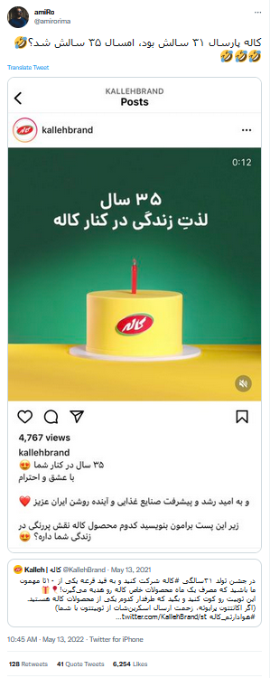
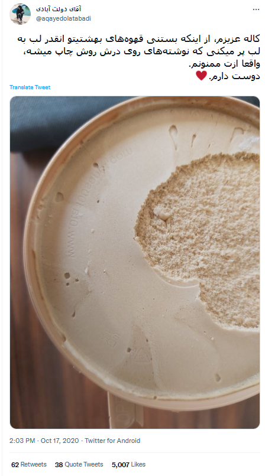
اکانت رسمی کاله در توییتر که در سایتشون (https://kalleh.com) هم بهش لینک دادند صفحه زیره :
تعداد 5737 توییت از این اکانت رو ذخیره کردم و حالا میخوام کمی بررسیش کنم. این اکانت در چه روزی از هفته و در چه ساعتی از شبانهروز بیشترین فعالیت رو داشته؟
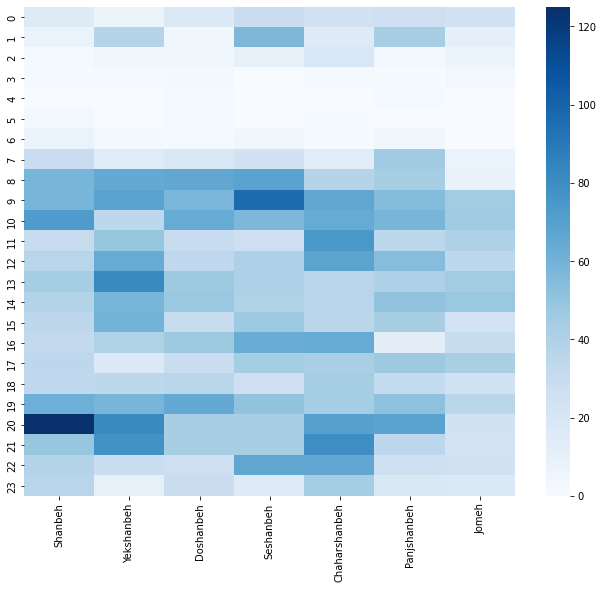
حالا ببینیم کدوم یکی از توییت های کاله بیشتر تعداد لایک + ریتوییت + کامنت رو گرفته :
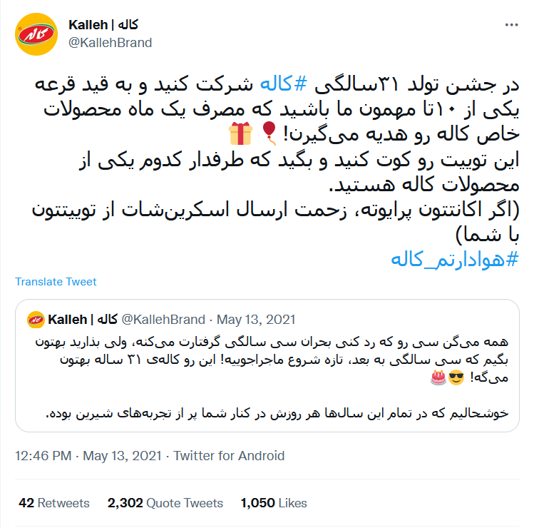
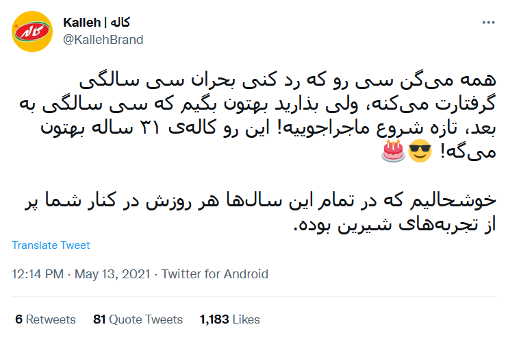
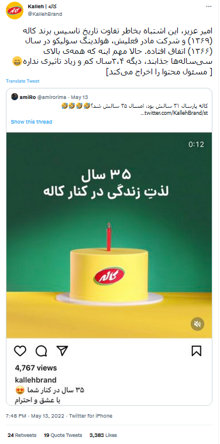
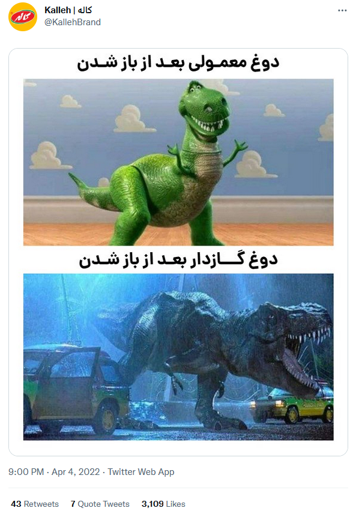
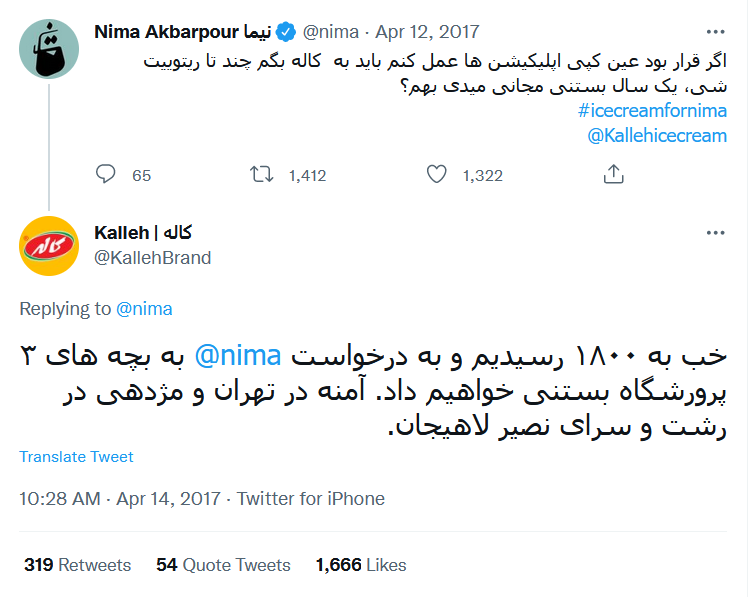
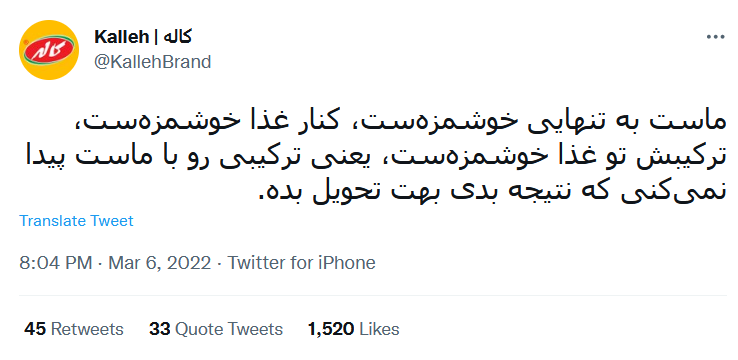
حالا بریم سراغ توییت هایی که کاله حذف کرده :)))))))
لینک توییت در آرشیو :
http://web.archive.org/web/20200417103708/
https://twitter.com/KallehBrand/status/1250355825215860736
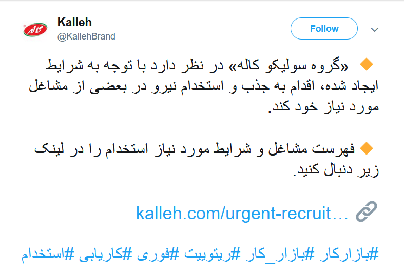
لینک توییت در آرشیو :
https://web.archive.org/web/20200727104525/
https://twitter.com/KallehBrand/status/1287700462595182592
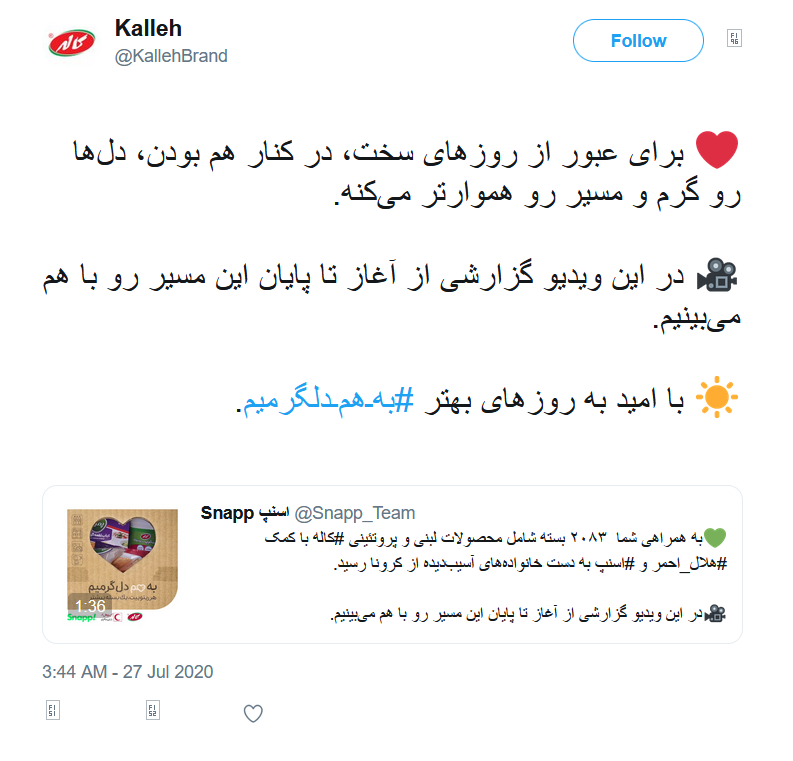
لینک توییت در آرشیو :
https://web.archive.org/web/20200808165403/
https://twitter.com/KallehBrand/status/1292141937206734855
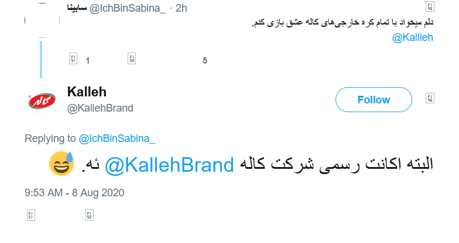
دیگه عکس بقیه رو نمیذارم :
https://web.archive.org/web/20200811092047/
https://twitter.com/KallehBrand/status/1293114962802425856
https://web.archive.org/web/20200827050125/
https://twitter.com/KallehBrand/status/1298847974366248960
https://web.archive.org/web/20200901162012/
https://twitter.com/KallehBrand/status/1300830583359238148
nb.neighbours()
| title | date | |
|---|---|---|
| prev | خیابانهای تهران زیر ذرهبین! (بخش اول) | ۱۴۰۱/۰۲ |
| next | اسنپفود چند رستوران فعال دارد؟! | ۱۴۰۱/۰۳ |